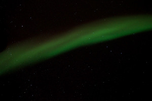
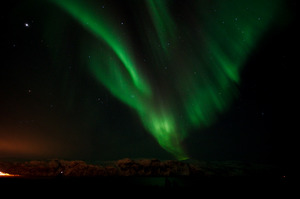
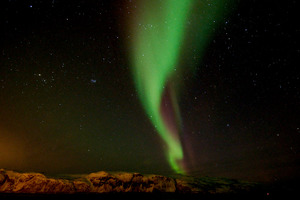
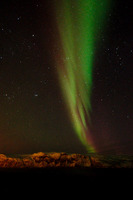
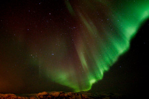
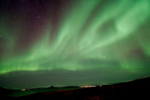

If we'd like to take northern light (aurora borealis) photos, first we have to choose place and time.
Place
It might sound logical to choose the northernmost place possible, but
(fortunately) the aurora-zone is not that north. Iceland and
Northern-Scandinavia is the best to view the aurora borealis in
Europe. We won't find too many cities with airport and hotels here,
so I chose Tromsø, Norway.
It is also important to check
the time of
the sunrise and sunset. Sunlight prevents aurora viewing, so
July is not the best choice. On the other hand the total darkness
of December can be good for aurora viewing, but quite bad for most
of the other activities.
If the aurora is weak then full moon might ruin our chance of
taking good pictures.
Most of the tours in this region requires snow (e.g. dog sledding)
so snow level should also be checked. The snow level info of the
previous years can be found here.
Of course it's impossible to fulfill all the conditions at the same
time. It's best to buy airplane tickets, book hotels, book guides in
advance, which makes it even more difficult to choose the time. It
is best to book other activities (dog sledding...) so we'll have a
good time even if we are unlucky and cannot see the Aurora.
Observation
You don't have to join an organized group, but these groups have
quite a fee advantages. You can find lots of tours
at Triadvisor. The
smaller the group the more you have to pay.
All the travel agencies suggest to dress properly and use warm
clothes because Northern-Norway can be very cold at night.
I had mittens but it was impossible to control the camera, so I
took it off quite a few times. Probably the combination of glove
liners and mittens is the best solution as
described here.
A torch (head-lamp) is also very useful.
Photography - equipment
We need equipment for low-light photography.
Tripod is a must. I was using a very small Manfrotto 209 tripod
and 482 micro ball-head. It was not too convenient to use such a
small tripod.
Camera: Pentax K-x DSLR. A full-frame DSLR would have been better
in this low-light condition.
Wide-angle lens: Sigma 10-20mm
f/4-5.6-et. Usually I was using 10mm focal length.
Batteries don't like cold, so I had spare batteries in my warm inside
pocket (no need for them luckily).
Photography - settings
No need for autofocus, I was using manual focus (infinity).
I was shooting RAW.
I set a 2 second delay to reduce camera shake.
Most of the photos were taken using 10mm focal length.
Wide aperture (small aperture number) helps to catch more
light. Most of the time I was using F4.
According
to rule
500 (sometimes
called rule
600) we should not see star trails on exposures shorter than
30 seconds (500/10/1.5 = 33.3). My photos confirm that. Usually my
exposure time was 10-15 seconds. Shorter times resulted very dark
images, longer times blurred the aurora.
I was using high ISO value (ISO 2500 - ISO 4000).
I had plenty of time so I was experimenting using different
settings. The values described above gave me the best result.
Photography - composition
Sometimes the aurora was exactly above us. I took a few pictures which show only the sky and the aurora and nothing else. These pictures are quite boring:
11mm f/5.6 15s ISO400010mm f/4 15s ISO3200
Our observation point was close to the sea, so the
most common background of my pictures shows the sea, a few
mountains, and the lights of a town:
10mm f/4 10s ISO640010mm f/4 10s ISO250010mm f/5.6 30s ISO400011mm f/5.6 15s ISO640010mm f/4 13s ISO640010mm f/4 20s ISO6400
A more interesting foreground may have been
better. On an organized tour it is very difficult to choose a
better place.
Fellow-travelers will ruin quite a few pictures ( Walking with
their head-lamp turned on during the 20s exposure. I have plenty
images like that), but they also make a few picture interesting. To
tell the truth I was not deliberately compose the images to show the
other travelers:
10mm f/4 15s ISO320011mm f/5.6 10s ISO400010mm f/4 15s ISO3200
One of the most typical picture shows someone smiling in front of the aurora. I had no such picture:
Sigma 10-20 is not a portrait lens, it's too wide angle.
Fill-in flash (using an external flash) would also be very useful.
The reflective vest is the worst possible clothing for such a picture.
My tripod was very small for a portrait.
Photography - postprocessing
Usually I don't like digital manipulation, I prefer small
modifications. My aim is to mimic perception by my eyes. This
approach is quite bad for aurora borealis, most of my unmodified
aurora pictures were quite different and much nicer than the naked
eye perception.
Once we have seen a very dim light. It might have been a very weak
aurora or city lights from far away. Our tour guide suggested to
take a few photos and check them. If it's green it's aurora:
I set color temperature to make the stars white and the sky
black. I was setting the values for each photo individually. Most
typical setting: temperature 4500K, tint 40.


{kind=link}
{kind=link}
{kind=link}
{kind=link}
{kind=link}
{kind=link}